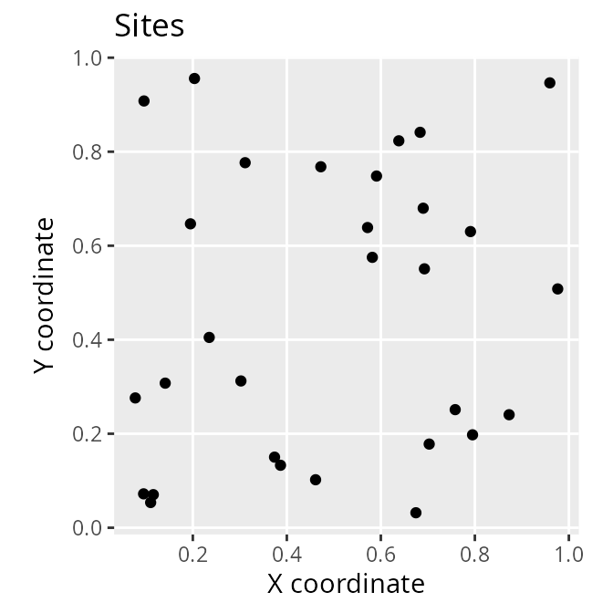
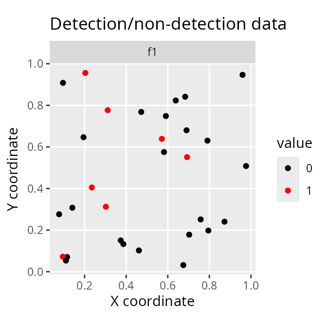
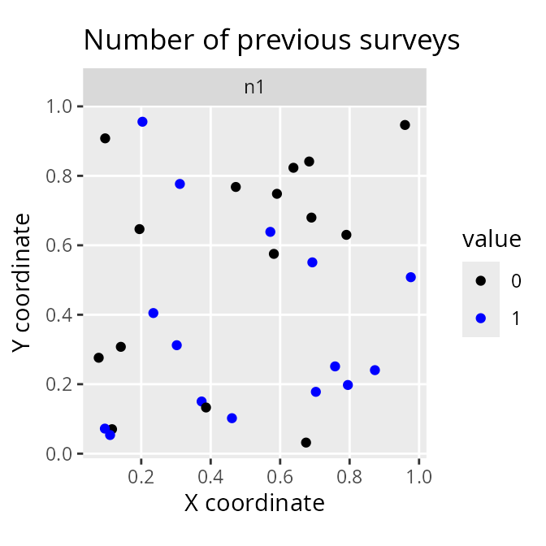
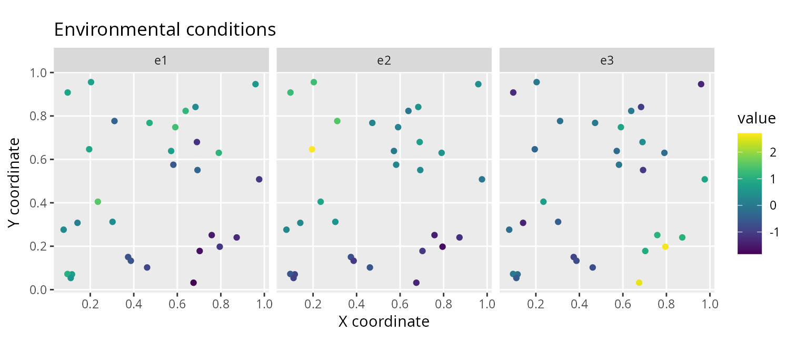
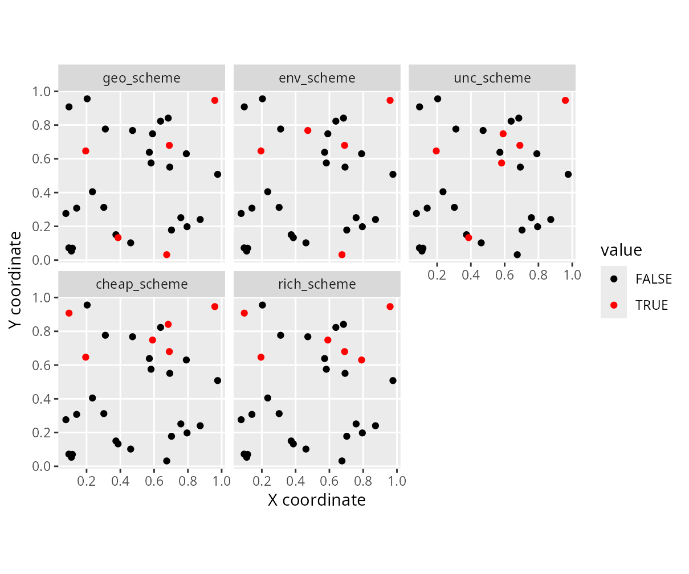
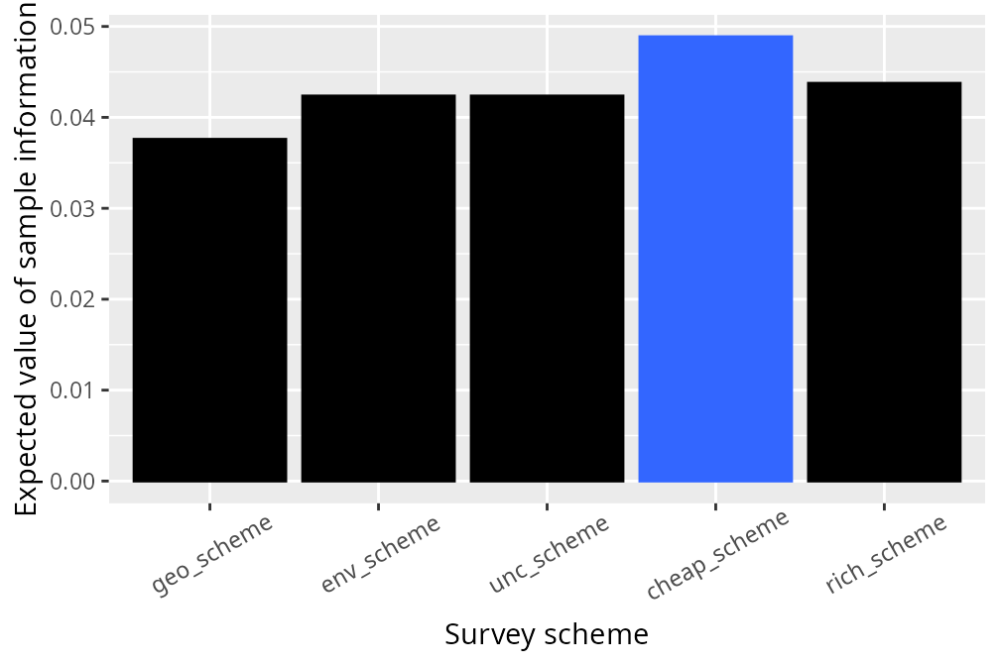
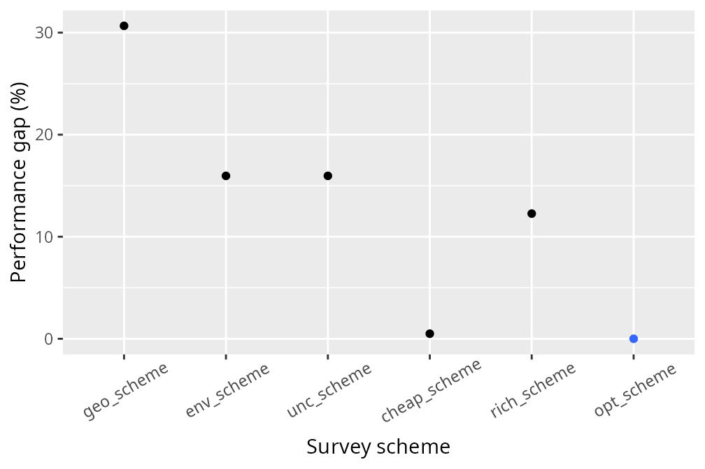

surveyvoi: Survey Value of Information
Jeffrey O. Hanson
2024-09-23
Source:vignettes/surveyvoi.Rmd
surveyvoi.RmdIntroduction
The funding available for conservation is limited. To ensure that conservation funds are allocated cost-effectively, conservation plans (termed prioritizations) can be developed – using a combination of economic, biodiversity, and land-use data – to prioritize a set of sites for conservation management (e.g. protected area establishment). However, existing data on biodiversity patterns are incomplete. As a consequence, prioritizations can potentially be improved by collecting additional data. Specifically, ecological surveys can be conducted in sites to learn more about which species are present within them. However, conducting ecological surveys reduces the funds available for conservation management. Thus, decision makers need to strategically allocate funding for surveying sites and managing them for conservation—this is not a trivial task.
The surveyvoi R package is a decision support tool for prioritizing sites for ecological surveys based on their potential to improve plans for conserving biodiversity (e.g. plans for establishing protected areas). Given a set of sites that could potentially be acquired for conservation management – wherein some sites have previously been surveyed and other sites have not – it can be used to generate and evaluate plans for additional surveys. Specifically, plans for ecological surveys can be generated using various conventional approaches (e.g. maximizing expected species richness, geographic coverage, diversity of sampled environmental conditions) and directly maximizing value of information using optimization algorithms. After generating plans for surveys, they can also be evaluated using value of information analysis. Please note that several functions depend on the ‘Gurobi’ optimization software (available from https://www.gurobi.com) and the gurobi R package (installation instructions available for online Linux, Windows, and Mac OS).
This tutorial provides a brief overview of the surveyvoi R
package. Here, we will simulate survey data, fit statistical models to
characterize the spatial distribution of a simulated species, and
generate and evaluate survey schemes based on different approaches.
Although this tutorial deals with only a single simulated species – to
keep the tutorial simple and reduce computational burden – the functions
used in this tutorial are designed to work with multiple species. If you
want to learn more about a specific function, please consult the
documentation written specifically for the function (accessible using
the R code ?function, where function is the
name of desired function).
Setup
Let’s start by setting up our R session. Here we will load some R packages and pre-set the random number generators for reproducibility.
Simulate data
Let’s simulate some data. To keep things simple, we will simulate
data for 30 sites and one conservation feature (e.g. species). Of the 30
sites in total, we will simulate survey data for 15 sites—meaning that
15 of the sites will not have survey data. We will also simulate three
spatially auto-correlated variables to characterize the environmental
conditions within the sites. Although the simulation code
(i.e. simulate_site_data) can output the probability that
features are expected to inhabit the sites, we will disable this option
to make our simulation study more realistic and instead predict these
probabilities using statistical models.
# simulate site data
site_data <- simulate_site_data(
n_sites = 30, n_features = 1, proportion_of_sites_missing_data = 15 / 30,
n_env_vars = 3, survey_cost_intensity = 5, management_cost_intensity = 2500,
max_number_surveys_per_site = 1, output_probabilities = FALSE)
# print site data
print(site_data)## Simple feature collection with 30 features and 7 fields
## Geometry type: POINT
## Dimension: XY
## Bounding box: xmin: 0.07758767 ymin: 0.03189323 xmax: 0.9762666 ymax: 0.9557619
## CRS: NA
## # A tibble: 30 × 8
## survey_cost management_cost f1 n1 e1 e2 e3
## <dbl> <dbl> <dbl> <dbl> <dbl> <dbl> <dbl>
## 1 9 2458 0 0 0.334113 0.502778 -1.00012
## 2 1 2524 0 1 -1.32716 -1.19893 1.06494
## 3 3 2483 0 0 -1.18385 0.676827 0.387451
## 4 12 2513 0 0 0.691077 -0.926471 -0.244236
## 5 4 2477 0 0 0.832864 2.70543 -0.351963
## 6 8 2481 0 1 -0.870905 -0.635214 -0.779346
## 7 1 2499 1 1 0.774926 1.31091 -0.0104341
## 8 6 2479 0 0 1.34695 0.220259 0.824172
## 9 7 2484 0 1 -0.670210 -0.729128 -0.912692
## 10 11 2519 0 0 0.125632 0.313454 -1.37448
## geometry
## <POINT>
## 1 (0.683582 0.841256)
## 2 (0.872904 0.240454)
## 3 (0.690117 0.679761)
## 4 (0.115936 0.0704436)
## 5 (0.195009 0.646561)
## 6 (0.461201 0.102122)
## 7 (0.203535 0.955762)
## 8 (0.590849 0.748232)
## 9 (0.373888 0.150227)
## 10 (0.141298 0.307626)
## # ℹ 20 more rows
# plot the spatial location of the sites
ggplot(site_data) +
geom_sf() +
ggtitle("Sites") +
labs(x = "X coordinate", y = "Y coordinate")
The site_data object is a spatially explicit dataset
(i.e. sf object) that contains information on the site
locations and additional site attributes. Here, each row corresponds to
a different site, and each column contains a different site attribute.
The f1 column contains the results from previous surveys,
where values describe the proportion of previous surveys where species
were previously detected at each site. Since each site has had at most a
single previous survey, these data contain zeros (indicating that the
species has not been detected) and ones (indicating that the species has
been detected). The n1 column contains the number of
previous surveys conducted within each site. Thus, sites with zeros in
this column have not previously been surveyed. The e1,
e2, and e3 columns contain environmental
information for each site (e.g. normalized temperature and rainfall
data). The survey_cost column contains the cost of
surveying each site, and the management_cost column
contains the cost of managing each site for conservation.
To help understand the simulated data, let’s create some visualizations.
# plot site occupancy data from previous surveys
# 1 = species was detected in 100% of the previous surveys
# 0 = species was detected in 0% of the previous surveys
site_data %>%
select(starts_with("f")) %>%
gather(name, value, -geometry) %>%
mutate(value = as.character(value)) %>%
ggplot() +
geom_sf(aes(color = value)) +
scale_color_manual(values = c("1" = "red", "0" = "black")) +
facet_wrap(~ name) +
labs(title = "Detection/non-detection data",
x = "X coordinate", y = "Y coordinate")
# plot number of previous surveys within each site
site_data %>%
select(starts_with("n")) %>%
gather(name, value, -geometry) %>%
mutate(value = as.character(value)) %>%
ggplot() +
geom_sf(aes(color = value)) +
scale_color_manual(values = c("1" = "blue", "0" = "black")) +
facet_wrap(~ name) +
labs(title = "Number of previous surveys",
x = "X coordinate", y = "Y coordinate")
# plot site cost data
# note that survey and management costs are on different scales
p1 <- ggplot(site_data) +
geom_sf(aes(color = survey_cost)) +
scale_color_viridis() +
labs(title = "Survey cost", x = "X coordinate", y = "Y coordinate") +
theme(legend.title = element_blank())
p2 <- ggplot(site_data) +
geom_sf(aes(color = management_cost)) +
scale_color_viridis() +
labs(title = "Management cost", x = "X coordinate", y = "Y coordinate") +
theme(legend.title = element_blank())
grid.arrange(p1, p2, nrow = 1)
# plot site environmental data
site_data %>%
select(starts_with("e")) %>%
gather(var, value, -geometry) %>%
ggplot() +
geom_sf(aes(color = value)) +
facet_wrap(~ var) +
scale_color_viridis() +
labs(title = "Environmental conditions",
x = "X coordinate", y = "Y coordinate")
After simulating data for the sites, we will simulate data for the
conservation feature. We set
proportion_of_survey_features = 1 to indicate that this
feature will be examined in future surveys.
# simulate feature data
feature_data <- simulate_feature_data(
n_features = 1, proportion_of_survey_features = 1)
# remove simulated model performance statistics since we will fit models below
feature_data$model_sensitivity <- NULL
feature_data$model_specificity <- NULL
# manually set target
feature_data$target <- 2
# print feature data
print(feature_data)## # A tibble: 1 × 5
## name survey survey_sensitivity survey_specificity target
## <chr> <lgl> <dbl> <dbl> <dbl>
## 1 f1 TRUE 0.989102 0.834741 2The feature_data object is a table
(i.e. tibble object) that contains information on the
conservation feature. Here, each row corresponds to a different feature
– and so it only has one row because we only have one feature – and each
column contains different information about the feature(s). The
name column contains the name of the feature. The
survey column indicates if the feature will be examined in
future surveys. The survey_sensitivity and
survey_specificity columns denote the sensitivity
(probability of correctly recording a presence) and specificity
(probability of correctly recording an absence) of the survey
methodology. Finally, the target column specifies the
number of occupied sites for each species that should ideally be
represented in the prioritization.
Modeling probability of occupancy
After simulating the data, we need to estimate the probability of the feature occurring in the unsurveyed sites. This is important for calculating the potential benefits of surveying sites, because if we can reliably predict the probability of the feature(s) occurring in unsurveyed sites using models, then we may not need to conduct any additional surveys. Specifically, we will fit gradient boosted regression trees – via the xgboost R package. These models are well-suited for modeling species distributions because they can accommodate high order interactions among different predictor variables that are needed to effectively model species’ environmental niches, even in the case of limited data. Furthermore, they can incorporate knowledge of the sensitivity and specificity of previous surveys during model fitting (using weights).
# create list of candidate parameter values for calibration procedure
xgb_parameters <- list(eta = 0.1, lambda = 0.1, objective = "binary:logistic")
# identify suitable parameters for model fitting
# ideally we would try a larger range of values (i.e. not just a single value of 0.1),
# but we will keep it low to reduce processing time for this example
xgb_results <- fit_xgb_occupancy_models(
site_data, feature_data,
c("f1"), c("n1"), c("e1", "e2", "e3"),
"survey_sensitivity", "survey_specificity",
n_folds = c(2), xgb_tuning_parameters = xgb_parameters)After fitting the models, we can examine the tuning parameters used to fit the models, extract the modeled probability of occupancy, and evaluate the performance of the models.
# print best parameters
print(xgb_results$parameters)## [[1]]
## [[1]]$eta
## [1] 0.1
##
## [[1]]$lambda
## [1] 0.1
##
## [[1]]$objective
## [1] "binary:logistic"
##
## [[1]]$scale_pos_weight
## [[1]]$scale_pos_weight[[1]]
## [1] 1 1
# print model performance (TSS value)
xgb_performance <- xgb_results$performance
print(data.frame(xgb_performance))## feature train_tss_mean train_tss_std train_sensitivity_mean
## 1 f1 1 0 1
## train_sensitivity_std train_specificity_mean train_specificity_std
## 1 0 1 0
## test_tss_mean test_tss_std test_sensitivity_mean test_sensitivity_std
## 1 0.7194687 0.2261671 0.9396965 0.08528208
## test_specificity_mean test_specificity_std
## 1 0.7797722 0.3114492
# store the model sensitivities and specificities in the feature_data object
feature_data$model_sensitivity <- xgb_performance$test_sensitivity_mean
feature_data$model_specificity <- xgb_performance$test_specificity_mean
# store predicted probabilities in the site_data object
xgb_predictions <- xgb_results$predictions
print(xgb_predictions)## # A tibble: 30 × 1
## f1
## <dbl>
## 1 0.565847
## 2 0.410422
## 3 0.410541
## 4 0.452530
## 5 0.565847
## 6 0.410422
## 7 0.565847
## 8 0.565847
## 9 0.452463
## 10 0.565847
## # ℹ 20 more rows
site_data$p1 <- xgb_predictions$f1
# plot site-level estimated occupancy probabilities
site_data %>%
select(starts_with("p")) %>%
gather(name, value, -geometry) %>%
ggplot() +
geom_sf(aes(color = value)) +
facet_wrap(~name) +
scale_color_viridis() +
labs(title = "Modeled probabilities", x = "X coordinate", y = "Y coordinate")
Expected value given current information
After simulating and modeling the data, we will now examine the
expected value of the decision given current information. This
value represents the conservation value of a near-optimal prioritization
given current information, whilst accounting for uncertainty in the
presence (and absence) of the conservation feature in each site.
Specifically, “current information” refers to our existing survey data
and our occupancy models. Next, we will set a total budget
(i.e. total_budget). This total budget represents the total
amount of resources available for surveying sites and managing them for
conservation. It will be set at 10% of the total site management
costs.
# calculate total budget for surveying and managing sites
total_budget <- sum(site_data$management_cost) * 0.1
# print total budget
print(total_budget)## [1] 7498.9Given the total budget, we can now calculate the expected value of the decision given current information.
# expected value of the decision given current information
evd_current <- evdci(
site_data = site_data,
feature_data = feature_data,
site_detection_columns = c("f1"),
site_n_surveys_columns = c("n1"),
site_probability_columns = c("p1"),
site_management_cost_column = "management_cost",
feature_survey_sensitivity_column = "survey_sensitivity",
feature_survey_specificity_column = "survey_specificity",
feature_model_sensitivity_column = "model_sensitivity",
feature_model_specificity_column = "model_specificity",
feature_target_column = "target",
total_budget = total_budget)
# print value
print(evd_current)## [1] 0.9443835We can potentially improve the expected value of the decision given current information by learning more about which sites are more likely (and less likely) to contain the conservation feature.
Survey schemes
Now we will generate some candidate survey schemes to see if we can
improve the management decision. To achieve this, we will set a budget
for surveying additional sites. Specifically, this survey budget
(i.e. survey_budget) will be set at 25% of the survey costs
for the unsurveyed sites. Note that our total budget must always be
greater than or equal to the survey budget.
# calculate budget for surveying sites
# add column to site_data indicating if the sites already have data or not
site_data$surveyed <- site_data$n1 > 0.5
# add column to site_data containing the additional survey costs,
# i.e. sites that already have data have zero cost, and
# sites that are missing data retain their cost values
site_data <-
site_data %>%
mutate(new_survey_cost = if_else(surveyed, 0, survey_cost))
# calculate total cost of surveying remaining unsurveyed sites
total_cost_of_surveying_remaining_sites <-
sum(site_data$new_survey_cost)
# calculate budget for surveying sites
survey_budget <- total_cost_of_surveying_remaining_sites * 0.25
# print budgets
print(survey_budget)## [1] 30.75
print(total_budget)## [1] 7498.9We will generate survey schemes by selecting unsurveyed sites that (i) increase geographic coverage among surveyed sites (Yates 1948), (ii) increase coverage of environmental conditions among surveyed sites [i.e. environmental diversity; Faith & Walker (1996)], (iii) increase coverage of sites with highly uncertain information (Guisan et al. 2006), (iv) increase coverage of sites where species are predicted to occur (Le Lay et al. 2010), and (v) increase coverage of sites that have low management costs.
# (i) generate survey scheme to increase geographic coverage
geo_scheme <-
geo_cov_survey_scheme(
site_data, "new_survey_cost", survey_budget, locked_out = "surveyed")
# (ii) generate survey scheme to increase environmental diversity,
# environmental distances are calculated using Euclidean distances here,
# though we might consider something like Mahalanobis distances for a
# real dataset to account for correlations among environmental variables)
env_scheme <-
env_div_survey_scheme(
site_data, "new_survey_cost", survey_budget, c("e1", "e2", "e3"),
locked_out = "surveyed", method = "euclidean")
# (iii) generate survey scheme using site uncertainty scores
# calculate site uncertainty scores
site_data$uncertainty_score <- relative_site_uncertainty_scores(site_data, "p1")
# generate survey scheme
unc_scheme <-
weighted_survey_scheme(
site_data, "new_survey_cost", survey_budget, "uncertainty_score",
locked_out = "surveyed")
# (iv) generate survey scheme using lowest cost of site management
# (i.e. inverse management cost)
site_data$inv_management_cost <- 1 / site_data$management_cost
cheap_scheme <-
weighted_survey_scheme(
site_data, "new_survey_cost", survey_budget, "inv_management_cost",
locked_out = "surveyed")
# (v) generate survey scheme using site species richness scores
# calculate site species richness scores
site_data$richness_score <- relative_site_richness_scores(site_data, "p1")
# generate survey scheme
rich_scheme <-
weighted_survey_scheme(
site_data, "new_survey_cost", survey_budget, "richness_score",
locked_out = "surveyed")Let’s visualize the different survey schemes.
# add schemes to site_data
site_data$geo_scheme <- c(geo_scheme)
site_data$env_scheme <- c(env_scheme)
site_data$unc_scheme <- c(unc_scheme)
site_data$cheap_scheme <- c(cheap_scheme)
site_data$rich_scheme <- c(rich_scheme)
# plot the schemes
site_data %>%
select(contains("scheme")) %>%
gather(name, value, -geometry) %>%
mutate_if(is.logical, as.character) %>%
mutate(name = factor(name, levels = unique(name))) %>%
ggplot() +
geom_sf(aes(color = value)) +
facet_wrap(~ name, nrow = 2) +
scale_color_manual(values = c("TRUE" = "red", "FALSE" = "black")) +
labs(x = "X coordinate", y = "Y coordinate")
We can see that different approaches yield different survey schemes – but how well do they perform?
Expected value of the decision given sample information
Now that we’ve generated the survey schemes, let’s calculate the expected value of the decision given sample information for each survey scheme.
# create table to store results
evd_survey_schemes <-
tibble(name = c("geo_scheme", "env_scheme", "unc_scheme", "cheap_scheme",
"rich_scheme"))
# expected value of the decision given each survey scheme
evd_survey_schemes$value <- sapply(
evd_survey_schemes$name, function(x) {
evdsi(
site_data = site_data,
feature_data = feature_data,
site_detection_columns = c("f1"),
site_n_surveys_columns = c("n1"),
site_probability_columns = c("p1"),
site_survey_scheme_column = as.character(x),
site_management_cost_column = "management_cost",
site_survey_cost_column = "survey_cost",
feature_survey_column = "survey",
feature_survey_sensitivity_column = "survey_sensitivity",
feature_survey_specificity_column = "survey_specificity",
feature_model_sensitivity_column = "model_sensitivity",
feature_model_specificity_column = "model_specificity",
feature_target_column = "target",
total_budget = total_budget)
})
# print values
print(evd_survey_schemes)## # A tibble: 5 × 2
## name value
## <chr> <dbl>
## 1 geo_scheme 0.981973
## 2 env_scheme 0.986738
## 3 unc_scheme 0.986738
## 4 cheap_scheme 0.993256
## 5 rich_scheme 0.988133We can also calculate how much the information gained from each of the survey schemes is expected to improve the management decision. This quantity is called the expected value of sample information (EVSI) for each survey scheme.
# estimate expected value of sample information for each survey scheme
evd_survey_schemes$evsi <-
evd_survey_schemes$value - evd_current
# print values
print(evd_survey_schemes)## # A tibble: 5 × 3
## name value evsi
## <chr> <dbl> <dbl>
## 1 geo_scheme 0.981973 0.0375896
## 2 env_scheme 0.986738 0.0423546
## 3 unc_scheme 0.986738 0.0423546
## 4 cheap_scheme 0.993256 0.0488727
## 5 rich_scheme 0.988133 0.0437499
# visualize the expected value of sample information for each survey scheme
# color the best survey scheme in blue
evd_survey_schemes %>%
mutate(name = factor(name, levels = name),
is_best = evsi == max(evsi)) %>%
ggplot(aes(x = name, y = evsi)) +
geom_col(aes(fill = is_best, color = is_best)) +
xlab("Survey scheme") +
ylab("Expected value of sample information") +
scale_color_manual(values = c("TRUE" = "#3366FF", "FALSE" = "black")) +
scale_fill_manual(values = c("TRUE" = "#3366FF", "FALSE" = "black")) +
theme(axis.text.x = element_text(angle = 30, vjust = 0.65),
legend.position = "none")
In this particular simulation, we can see that all of the survey schemes have a low expected value of sample information (i.e. most values are close to zero). This means that none of these survey schemes would likely lead to a substantially better conservation outcome when considering the funds spent on conducting them. If the survey schemes had negative values, then this means that they would be expected to poorer conservation outcomes than simply using existing information. We can see that surveying sites with the cheapest management costs is the best strategy – in this particular situation – because it has the highest expected value of sample information, but can we do even better with a different scheme?
Optimized survey scheme
Now let’s generate an optimized survey scheme by directly maximizing the expected value of the decision given a survey scheme.
# generate optimized survey scheme(s)
opt_scheme <- approx_near_optimal_survey_scheme(
site_data = site_data,
feature_data = feature_data,
site_detection_columns = c("f1"),
site_n_surveys_columns = c("n1"),
site_probability_columns = c("p1"),
site_management_cost_column = "management_cost",
site_survey_cost_column = "survey_cost",
feature_survey_column = "survey",
feature_survey_sensitivity_column = "survey_sensitivity",
feature_survey_specificity_column = "survey_specificity",
feature_model_sensitivity_column = "model_sensitivity",
feature_model_specificity_column = "model_specificity",
feature_target_column = "target",
total_budget = total_budget,
survey_budget = total_budget,
n_approx_replicates = 5,
n_approx_outcomes_per_replicate = 10000,
verbose = TRUE)
# print number of optimized survey schemes
# if there are multiple optimized survey schemes,
# this means that multiple different survey schemes are likely to deliver
# similar results (even if they select different sites for surveys)
print(nrow(opt_scheme))## [1] 1
# add first optimized scheme to site data
site_data$opt_scheme <- c(opt_scheme[1, ])
# plot optimized scheme
site_data %>%
mutate(name = "opt_scheme") %>%
ggplot() +
geom_sf(aes(color = opt_scheme)) +
facet_wrap(~ name, nrow = 1) +
scale_color_manual(values = c("TRUE" = "red", "FALSE" = "black")) +
labs(x = "X coordinate", y = "Y coordinate")
We can see that the optimized survey scheme (opt_scheme)
is different to the previous survey schemes.
# calculate expected value of sample information for the optimized scheme
evd_opt <- evdsi(
site_data = site_data,
feature_data = feature_data,
site_detection_columns = c("f1"),
site_n_surveys_columns = c("n1"),
site_probability_columns = c("p1"),
site_survey_scheme_column = "opt_scheme",
site_management_cost_column = "management_cost",
site_survey_cost_column = "survey_cost",
feature_survey_column = "survey",
feature_survey_sensitivity_column = "survey_sensitivity",
feature_survey_specificity_column = "survey_specificity",
feature_model_sensitivity_column = "model_sensitivity",
feature_model_specificity_column = "model_specificity",
feature_target_column = "target",
total_budget = total_budget)
# calculate value
print(evd_opt)## [1] 0.9934998
# append optimized results to results table
evd_survey_schemes <- rbind(
evd_survey_schemes,
tibble(name = "opt_scheme", value = evd_opt, evsi = evd_opt - evd_current))
# print updated results table
print(evd_survey_schemes)## # A tibble: 6 × 3
## name value evsi
## <chr> <dbl> <dbl>
## 1 geo_scheme 0.981973 0.0375896
## 2 env_scheme 0.986738 0.0423546
## 3 unc_scheme 0.986738 0.0423546
## 4 cheap_scheme 0.993256 0.0488727
## 5 rich_scheme 0.988133 0.0437499
## 6 opt_scheme 0.993500 0.0491163
# visualize expected value of sample information
# color the best survey scheme in blue
evd_survey_schemes %>%
mutate(name = factor(name, levels = name),
is_best = evsi == max(evsi)) %>%
ggplot(aes(x = name, y = evsi)) +
geom_col(aes(fill = is_best, color = is_best)) +
xlab("Survey scheme") +
ylab("Expected value of sample information") +
scale_color_manual(values = c("TRUE" = "#3366FF", "FALSE" = "black")) +
scale_fill_manual(values = c("TRUE" = "#3366FF", "FALSE" = "black")) +
theme(axis.text.x = element_text(angle = 30, vjust = 0.65),
legend.position = "none")We can see that the optimized survey scheme has the highest expected value of sample information of all the candidate survey schemes. To better understand how sub-optimal the candidate survey schemes are, let’s compute their relative performance and visualize them.
# express values in terms of relative performance
evd_survey_schemes$relative_performance <-
((max(evd_survey_schemes$evsi) - evd_survey_schemes$evsi) /
evd_survey_schemes$evsi) * 100
# visualize relative performance
# zero = same performance as optimized scheme,
# higher values indicate greater sub-optimality
evd_survey_schemes %>%
mutate(name = factor(name, levels = name),
relative_performance = abs(relative_performance),
is_best = relative_performance == min(relative_performance)) %>%
ggplot(aes(x = name, y = relative_performance)) +
geom_point(aes(fill = is_best, color = is_best)) +
xlab("Survey scheme") +
ylab("Performance gap (%)") +
scale_color_manual(values = c("TRUE" = "#3366FF", "FALSE" = "black")) +
scale_fill_manual(values = c("TRUE" = "#3366FF", "FALSE" = "black")) +
theme(axis.text.x = element_text(angle = 30, vjust = 0.65),
legend.position = "none")
We can see that the optimized survey scheme performs better than the other survey schemes. Although the optimized survey scheme doesn’t provide a substantial improvement in this particular situation, we can see how value of information analysis can potentially improve management decisions by strategically allocating funds to surveys and conservation management. Indeed, since we only considered a single species and a handful of sites – to keep the tutorial simple and reduce computational burden – it was unlikely that an optimized survey scheme would perform substantially better than simply using current information. If you want to try something more complex, try adapting the code in this tutorial to simulate a larger number of sites and multiple species?
Conclusion
Hopefully, this tutorial has been useful. If you have any questions about using the surveyvoi R package or suggestions for improving it, please file an issue on the package’s online coding repository (https://github.com/prioritizr/surveyvoi/issues).